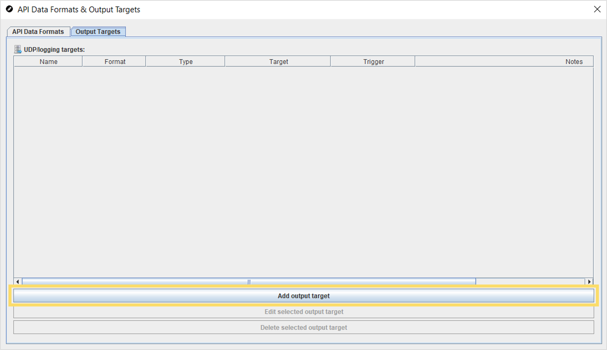
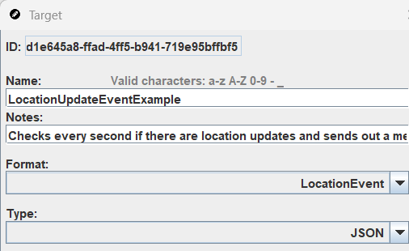
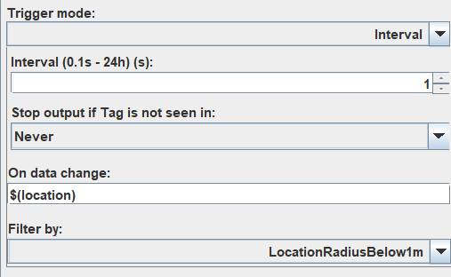
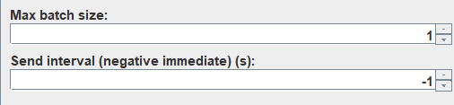
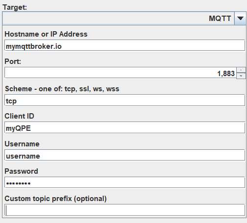

Create Output Targets
See Online Documentation section Software Integration for an overview and concrete examples for using output targets. Targets define the data collection (collection frequency and result filtering), data sending (message size and sending frequency) and the destination & delivery protocol for the stream.
To define targets for your project
- Open the project in the Quuppa Site Planner (QSP).
- In the menu bar at the top, open the Project menu and select Output Targets. Alternatively, access the editor via the object tree on the left by clicking Output Targets. This will open the API Data Formats & Output Targets editor to the Output Targets tab.
- In the editor, click on the Add output target
button.

- Enter a clear and concise Name for your target. Use the Notes section to describe the target's behaviour.
- Select the Output Format and the Type
(JSON or CSV).

Note:See the Output formats section for more details on creating or editing enabled Legacy Output Formats in the Quuppa Site Planner (QSP) application settings, you will also see the legacy formats such as Location JSON, Location CSV, Tag info JSON, Tag info CSV, and Processed location CSV. These legacy formats are deprecated; please use the default formats listed above instead. - Define your data collection settings:
- Trigger mode: Frequency of the check.
- On data change: Change criteria (optional).
- Filter by: Filter criteria (optional).

- Define the data sending settings:
- Max batch size: Maximum number of events per message.
- Send interval: Maximum time for data
collection.

- Select the protocol for the Target and configure the
destination:

Target Settings
| Setting | Description | Options |
|---|---|---|
| Format | Select the output format for the target. | DefaultInfo, DefaultLocation, DefaultLocationAndInfo or a custom output format |
| Type | Select the output format: JSON or CSV. | JSON, CSV |
| Trigger mode | Define the event that triggers a data update. | Interval (at predefined intervals, in seconds);LastSeenUpdate (a new packet is received from the tag);LocationUpdate (a location is available);RawPositionUpdate (a new raw position is available for the tag);SmoothPositionUpdate (a new smooth position is available for the tag);KalmanPositionUpdate (a new Kalman position is available for the tag);ButtonDownUpdate (new button down information is available for the tag). |
| On Data Change | Optional. Produce output only if the
value of the field has changed since the previous output. Uses
the same $(field.attribute) annotation as
Output Formats. |
Example: $(location.ts) ensures output is only produced if the timestamp of the location estimate differs from the previous output. |
| Max batch size |
Optional. Applicable for Interval type targets. Defines the number of tags / Locators collected into a single message when outputting data. |
The default value is 1. Example: A value set to 1000 collects a maximum of 1000 tags / Locators per message that is sent. If the count exceeds 1000, the system sends multiple messages of up to 1000 tags each at the specified interval. Note: Large UDP messages may be truncated (cut away). |
| Target | Select whether data is sent over UDP, MQTT or written to a local File. | UDP:
|
| Start at system start | Allows you to select whether data is sent automatically from the moment the system is started. This ensures data flow continues after system restarts caused by issues such as power failures. | Selected, Not selected |
| Tag groups | Select whether the target is defined for all tags, or for specific tag groups. | All tags, Custom. |